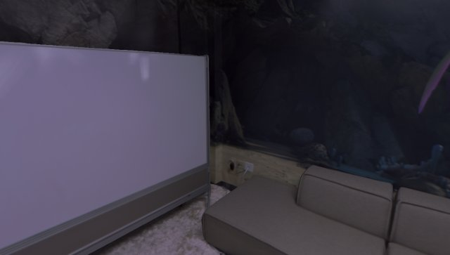
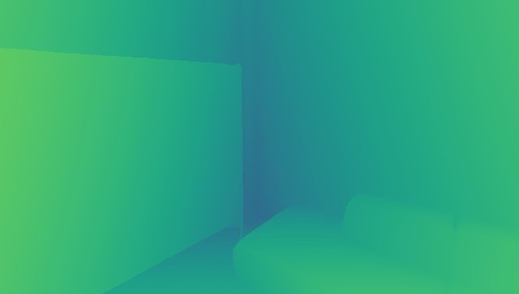

Frames, depth and camera pose
Before anything can be recognised, every pixel needs a place in the room. Three things give it one: the pixel's position in the image, how far away it is (depth), and where the camera was (pose).
1 · Frame source
A DroidCam stream, a video file or a dataset folder. Frames are kept every stride frames and resized to
640 px wide (source.target_width). Intrinsics are rescaled with them.
perception/frame_source.py
2 · Depth
Depth Anything V3 metric (DA3METRIC-LARGE)
Predicts metres from one RGB image, scaled by focal / 300. Depths outside 0.1–10 m are discarded.
On Replica the dataset's own depth is used instead (--depth_backend reference).
3 · Camera pose
DROID-SLAM (separate process)
One 4×4 camera-to-world matrix per frame from optical flow between frames. Needs small motion between frames
(under ~5°). Replica runs use the dataset poses (--pose_backend reference).
Try it: lift a pixel into the room
Move the mouse over the frame (Replica office_0, frame 50). The pipeline does exactly this for every pixel of every frame.


| Pixel (u, v) | – |
| Depth z | – |
| Camera coordinates x = (u − cx)·z / fx, y = (v − cy)·z / fy | – |
| World coordinates pworld = R · pcam + t | – |
| Voxel (1 cm) floor(p / 0.01) | – |
The whole frame, lifted
160 × 91 sampled pixels back-projected with the real depth, in the camera's frame. The pipeline keeps every pixel and merges them over all frames (next page).
Why each part matters
| If this is wrong… | …this happens downstream |
|---|---|
| Focal length (fx) | DA3 metric depth is proportional to fx, so the whole map is scaled wrongly; objects look too big or too small. |
| Depth at object edges | Pixels at an edge get the wall's depth and "bleed" onto it. Fusion peels 2 px off each mask (mask_erode_px: 2) to limit this. |
| Pose drift | The same object seen later lands a few cm away and fusion may count it twice (a duplicate). |
| Too few overlapping frames | DROID-SLAM loses track; 3RScan keyframes (up to 52° apart) cannot be tracked, so they use dataset poses. |
source, camera, depth, pose.
Written to disk: data/processed/<scene>/rgb, point, mask, poses, capture.json.